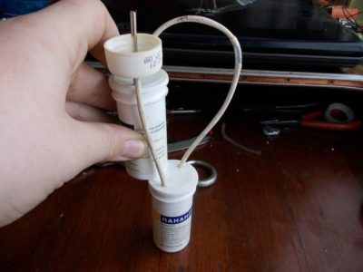

Ознакомление
Успокаивающее и благотворное влияние воды на человеческую психику известно с далеких времен. Увы, наш век стремительных скоростей и высоких технологий, не всегда дает нам возможность отдохнуть на берегу моря, речки или другого природного водоема, где можно полностью расслабиться и забыться вдали от городской суеты. Но эти же, передовые технологии, помогают внести в наш быт одновременно с классической живописью, романтикой, и маленькую живую часть окружающей природы.
Все чаще можно наблюдать в жилых и офисных помещениях наших сограждан декоративные настольные фонтаны и в качестве и оригинального интерьерного украшения, и как средство для создания благотворного микроклимата в помещении, а также для релаксации после сложного трудового дня.
Сейчас необыкновенно модно использовать в качестве домашнего украшения настольные фонтаны. Вращается водяное колесо, особые туманообразователи бесшумно работают, вращаются шары на постаменте, струится вода из чаш, из желобков, тихо поднимается и опускается бамбуковая палочка. Функционируют декоративные фонтаны благодаря небольшой электропомпе, которая бесшумно работает, что обеспечивает крепкий и полноценный сон обитателям дома, когда фонтан установлен в спальне.
Настольный фонтан является самым простым комнатным декоративным фонтаном для дома. Он имеет ряд преимуществ, таких как, небольшой размер, многообразие вариантов для любых интерьерных стилей. Чаще всего для настольных фонтанов в качестве декора используют мох цветы, разные искусственные или натуральные камни, крохотные карликовые деревца, при желании можно сделать заказ на любую отделку. Оригинальная подсветка добавляет достоинств декоративному фонтану, потому что в темноте она придает фонтану изысканный и элегантный облик.
Изготовив комнатный фонтан своими руками в домашних условиях, можно не долько сэкономить достаточно крупную сумму денег, но и приобрести полезное украшение интерьера. Согласно китайскому учению фэн-шуй, символ Воды, размещённый в северо-западной части желища обеспечивает достаток в семье. Прекрасным олицетворением подвижной стихии в доме может стать журчащий ручеёк, каскад водопадов или другая форма фонтана.
Принцып работы
Небольшие декоративные каскады для украшения интерьера должны быть сделаны с учетом того, что постоянно прибывающую воду в домашних условиях сливать некуда. Это значит, что количество жидкости, которое находится в системе, должно быть постоянным. Для соблюдения этого требования фонтанчик, установленный в комнате, нужно сделать работающим по замкнутому циклу. При этом вода будет собираться в накопительной емкости. Установленный в системе насос должен поднимать ее до верхней точки конструкции, откуда жидкость и будет изливаться, снова попадая в резервуар
 рис.1.Для того чтобы тонкая струйка при этом красиво стекала, капала или била вверх, на ее пути следует сделать декоративные препятствия из ракушек, камня, черепков или других предметов. В Древнем Китае и Японии специально обученные мастера строили русло для ручейка так, чтобы он красиво журчал. Настройщики «музыки воды» создавали настоящие шедевры из обычных камешков, укладывая их так, чтобы образовались каскады с углублениями, в которые падали капли и струйки, производя характерный для ручья или водопада шум.
Что подготовить для работы
Чтобы создать мини фонтан, нужно подобрать подходящий насос. Его мощность зависит от высоты, на которую потребуется поднять жидкость. Эта величина диктуется размерами конструкции и определяется индивидуально. Если хочется сделать фонтанчик своими руками так, чтобы струя воды била вверх, лучше купить насос с большей мощностью и регулятором. Чтобы собрать небольшой настольный каскад, вполне достаточно аквариумного насоса для фильтрации воды
Для сборки фонтана необходимо подготовить
- резервуар, в который будет стекать вода;
- силиконовые трубки;
- водостойкий клей;
- материалы для декорирования изделия.
Чаша резервуара должна быть вместительной. Кроме своей прямой функции - сбора жидкости, циркулирующей в системе - она будет служить и основой для композиции из камня или других материалов. Часть из них можно разместить прямо в емкости.
Методика сборки
Самодельный или покупной насос нужно прикрепить к дну резервуара (накопительной емкости). Глубина его должна быть такой, чтобы помпа была полностью погружена в воду. Скрыть насос можно по-разному: поместить поверх него сетчатую крышку, на которую будет уложена галька или ракушки, изображающие дно водоема, или спрятать внутри крупного элемента декора. Один из вариантов оформления - сухой фонтан - предусматривает полностью скрытую поверхность воды в накопителе. Для этого поверх него нужно уложить решетку и закрепить камни. Вода будет проходить сквозь камни в емкость, не образуя видимого бассейна. Рис. 2.
Как собрать мини фонтан в квартире из керамических горшков Рис. 3. расскажет небольшой мастер-класс:
Для этого необходимо подготовить 2 керамических горшка и 5 поддонов (2 больших и 3 маленьких). Покрыть их водостойким лаком, просверлить в центре 1 большего и 1 меньшего поддона отверстие для трубки. На краях поддонов сделать пропилы для стекания воды.
- Установить на дне резервуара помпу, придерживаясь схемы на рисунке. Закрыть ее большим по размеру горшком, а трубку вывести через его дренажное отверстие и просверленные дырочки в поддонах на самый верх конструкции.
- Установить рядом меньший горшочек и закрепить на нем поддон. Следующий ярус состоит из 2-х маленьких поддонов (один перевернут и служит основанием для чаши из другого). Поддоны надо размещать так, чтобы пропиленные в их бортиках отверстия позволяли воде переливаться из одного в другой, образуя каскад.
- Декорировать фонтанчик, своими руками собранный из самых простых материалов, красивыми камешками, растениями и ракушками, фигурками водных животных или птиц.
Такой миниатюрный водоем можно поставить на стол или отвести ему специальный уголок среди комнатных растений. Переливающаяся вода не только оживит и украсит композицию, но и позволит немного увлажнить воздух.